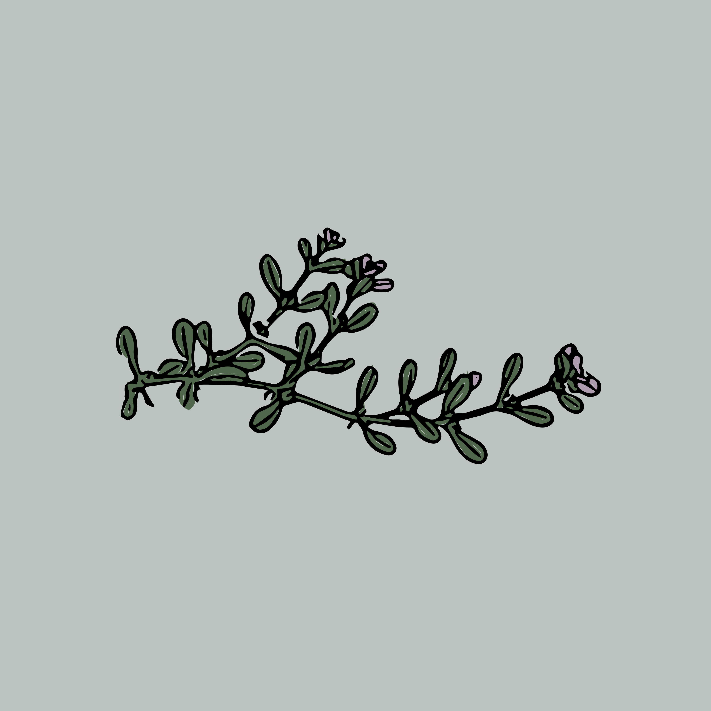

Find Your Natural Balance, One Simple Routine at a Time
Natural Vitality Blend™ is a gentle daily supplement designed to support calm, focus, and overall well‑being. No hype. No medical claims. Just a simple routine that helps you feel more grounded.

About the Product
Life gets busy. Stress builds up. Routines fall apart. Natural Vitality Blend™ was created to help you reconnect with a sense of balance through small, steady habits. Our formula is made with familiar, plant‑based ingredients and paired with a lightweight AI assistant that helps you build a routine that feels right for you.
What Makes It Different
Natural Vitality Blend™ focuses on clarity, honesty, and simplicity. We don’t promise miracles. We don’t make medical claims. We simply offer a routine that supports your day in a natural, approachable way.
How It Works
Take the quick 3‑question balance check
Get simple, personalized routine suggestions
Build a daily habit that feels sustainable
Transparency First
We believe wellness should feel safe and straightforward. That’s why we use clear language, gentle suggestions, and visible disclaimers. You stay in control of your routine at every step.
Ingredients
Ashwagandha
Often used to support calm and help manage everyday stress.
Rhodiola
Traditionally used to support focus and steady energy.
Panax Ginseng
Commonly associated with clarity and overall vitality.
Testimonials
“I didn’t want anything complicated. Natural Vitality Blend™ helped me build a simple morning routine that actually sticks. I feel more grounded throughout the day.” — Maya, 32
“I like that the suggestions are gentle and not pushy. The balance check made me think about my habits in a new way.” — Jordan, 41
“The whole experience feels calm and straightforward. It’s refreshing to see a wellness product that doesn’t overpromise.” — Elena, 27
Your Balance Check
Your Suggestions
These suggestions are general lifestyle ideas and not medical advice.
Ready to Restore Your Natural Balance?
Experience the full benefits of Natural Vitality Blend and feel the difference from within.